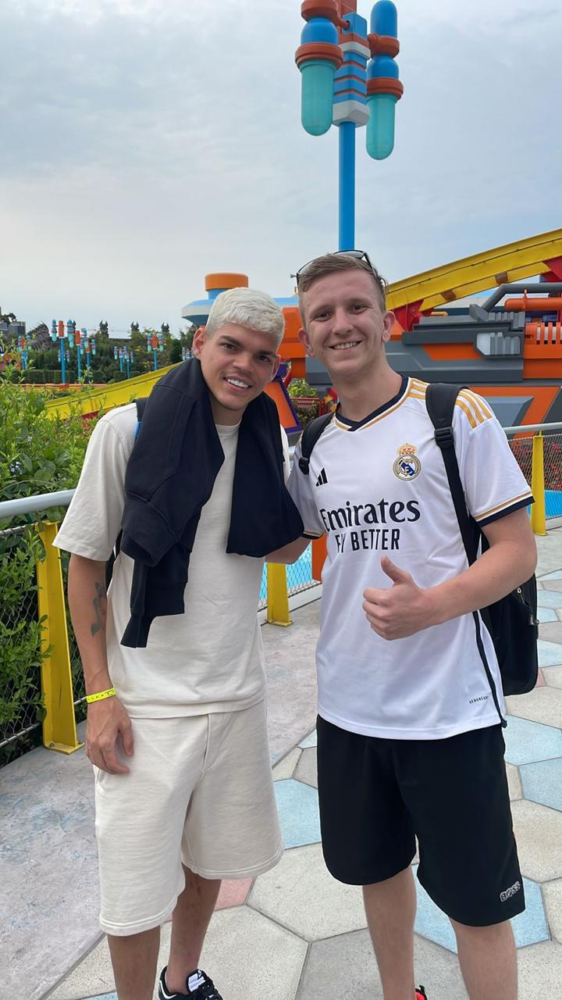
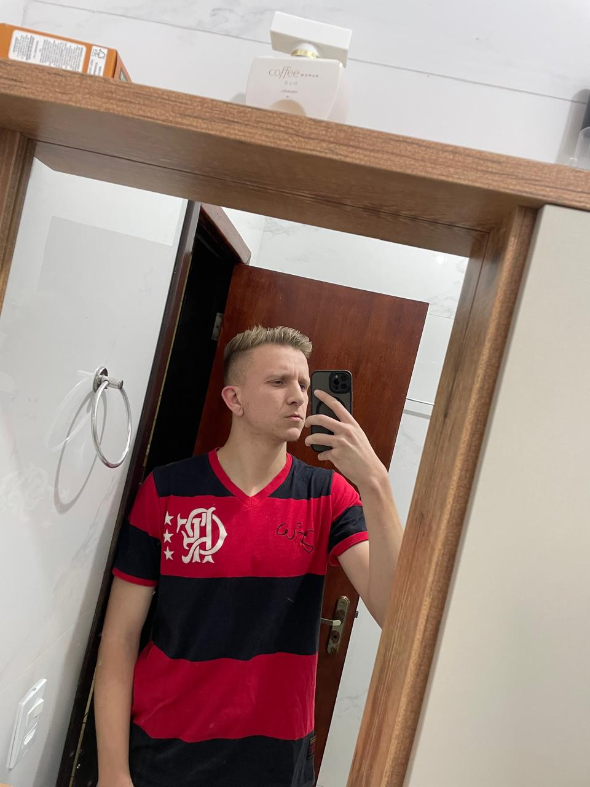
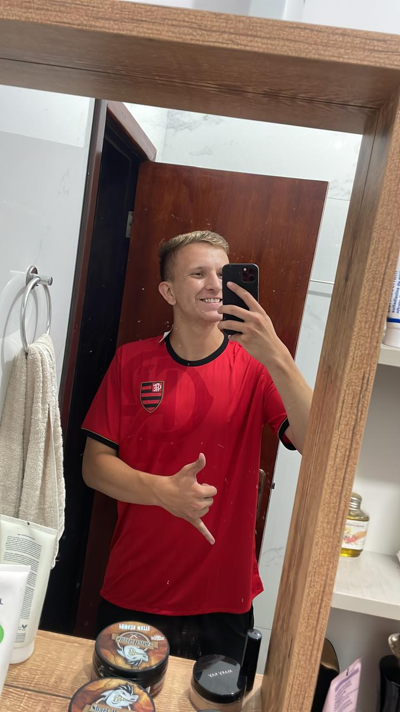
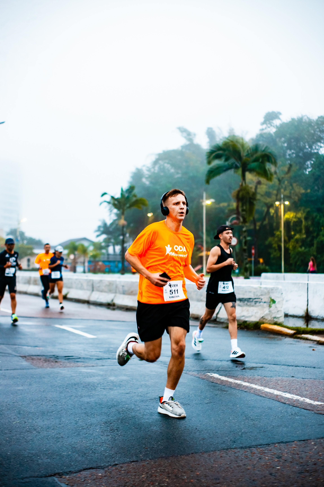
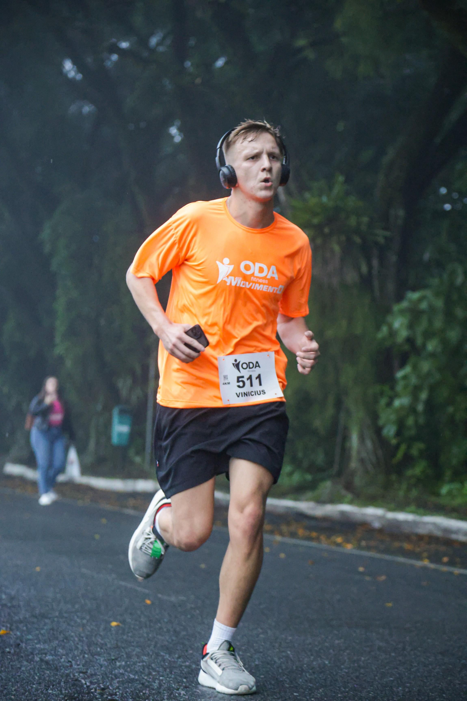
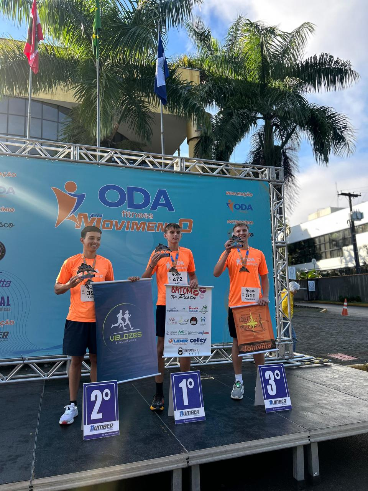
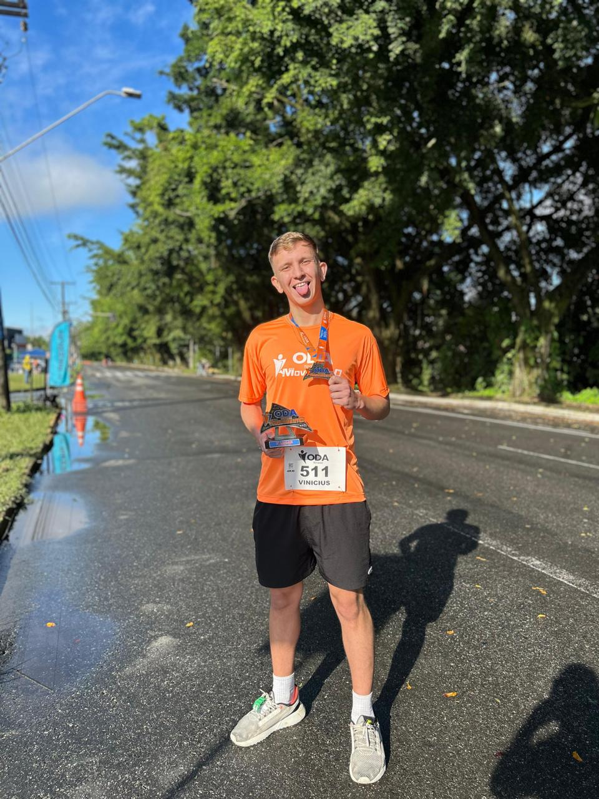

Futebol
Eu gosto muito de futebol desde os meus 8 ou 9 anos,
sempre fui de jogar bola na rua com meus amigos e vizinhos,
nunca fui de treinar ou participar de competições mas sempre gostei
de acompanhar qualquer coisa que envolva futebol, sendo profissinal,
armador ou qualquer outra que seja, Sou fiel tocedor do Flamengo.



Aqui tem algumas fotos mostrando o quanto eu gosto de futebol,
na primeira eu conheci o lateral do flamengo e nas outras e só pra
mostrar que as camisa do flamengo são muito bonitas.
Jogos Virtuais
Desde de pequeno eu sempre gostei de video game e desse mundo mais gamer
jogava muito no PC jogos de navegador e outros mais, com 8 anos eu ganhei
meu primero video game, foi um Playstation 2 , e desde então eu sempre curti
muito jogos e tal, e eu sempre tive o sonho desde pequeno de ter um PC gamer
pra min poder jogar oque eu quisesse, e mais ou menos a 1 ano eu consegui montar
o meu PC com frutos do meu proprop trabalho.
Minha Steam
Atividades Fisicas e corridas
Eu sou um tipo de pessoa que não para quieto por nada então
sempre fui muito agitado gosto de treinar, jogar volei ou basquete, futebol
altinha qualquer tipo coisa ate não sabendo eu faço.




Eu gosto de participar de corridas de rua, e aqui foi o dia
em que eu peguei podio, mesmo quando me falaram que seria dificil,
que não dava, eu fui la e consegui, foi uma meta pessoal que eu tenho
orgulho de dizer que realizei.